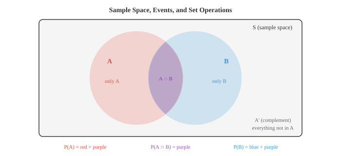
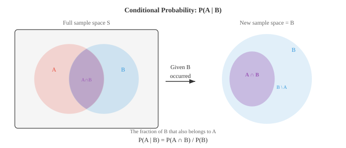
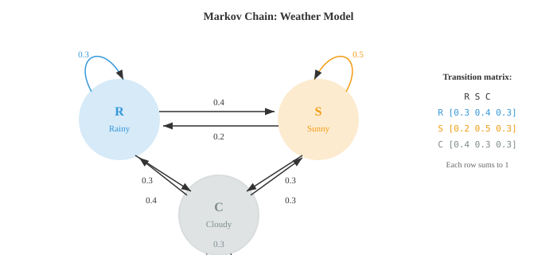
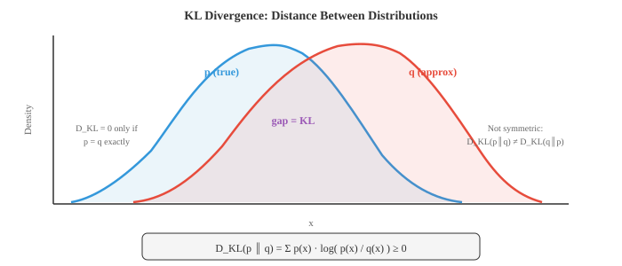

Maths, CS & AI Compendium · Chapter 05
Chance, Failure, Surprise
Chapter 04 handed you data and asked you to summarise it. This chapter hands you a model and asks what data it would produce — and then, with Bayes' theorem, lets you run that arrow backwards. That reversal is the single most useful idea in the chapter, and it settles a debt: Chapter 04 §09 said a p-value cannot tell you the probability your process is fine. Bayes is what can.
The engineering home for all of this is reliability. The exponential distribution is a constant hazard rate. The Weibull shape parameter is the bathtub curve. Series and parallel reliability block diagrams are the AND and OR rules of probability drawn as boxes. And the hazard rate itself — the thing that defines a failure model — is a conditional density, which is the definition of conditional probability.
There is also one correspondence here that is deeper than an analogy and genuinely startling: the entropy of information theory and the entropy of your thermodynamics course are the same quantity in different units. §08 does that carefully, because it is also the place where overclaiming is easiest.
The bridge
| What you already use | What probability calls it | How good is the match? |
|---|---|---|
| Hazard rate \(h(t)=f(t)/R(t)\) | Conditional density | Identical. Failure rate is a conditional probability. |
| Series reliability \(R=\prod R_i\) | AND rule for independent events | Identical. |
| Parallel/redundant \(1-\prod(1-R_i)\) | OR rule via the complement | Identical. |
| Constant failure rate, MTBF | Exponential distribution | Identical. MTBF \(=1/\lambda\). |
| The bathtub curve | Weibull shape parameter \(\beta\) | Exact. \(\beta<1,=1,>1\) are its three zones. |
| Failures per interval at rate \(\lambda\) | Poisson distribution | Identical. |
| Process capability, \(\pm3\sigma\), PPM | Normal tail probabilities | Identical. |
| Fault diagnosis from a noisy alarm | Bayes' theorem | Identical — and you probably get it wrong. See §05. |
| Machine state models, availability | Markov chains, stationary distribution | Identical. |
| Gibbs entropy \(S=-k_B\sum p\ln p\) | Shannon entropy | The same quantity, rescaled. See §08. |
| Least-squares curve fit | Maximum likelihood under Gaussian noise | Identical. See §06. |
| "Components fail independently" | The i.i.d. assumption | Usually false in both. See §09. |
Probability starts with counting outcomes. A permutation counts arrangements where order matters, \(P(n,r)=\frac{n!}{(n-r)!}\); a combination counts selections where it does not, \(\binom{n}{r}=\frac{n!}{r!(n-r)!}\). The whole of combinatorics is bookkeeping about whether order and repetition count.
Everything then rests on three axioms: probabilities are non-negative, the whole sample space has probability 1, and for mutually exclusive events probabilities add. From those three, two rules do most of the work:
Subtracting the overlap in the first is inclusion–exclusion; forgetting to subtract it is the most common counting error there is. The second is the definition of independence, not a theorem about it — a distinction §09 will make expensive.

Conditional probability is the probability of \(A\) given that \(B\) has already happened — it restricts attention to the part of the world where \(B\) holds, and renormalises:
Take a component with failure density \(f(t)\) and reliability \(R(t)=P(T>t)=1-F(t)\). The hazard rate is
Read the definition rather than the formula: \(h(t)\,\mathrm{d}t\) is the probability the part fails in the next instant given that it has survived to \(t\). The denominator \(R(t)\) is the renormalisation onto the survivors — exactly the \(P(B)\) above. Every failure rate you have ever quoted, every FIT number on a datasheet, is a conditional probability. That is why a hazard rate can rise while the failure density falls: the population of survivors is shrinking underneath it.
Two events are independent when \(P(A\mid B)=P(A)\) — learning \(B\) tells you nothing about \(A\). Note carefully that this is not the same as being mutually exclusive. Mutually exclusive events are maximally dependent: if one happens, the other definitely did not.

A reliability block diagram is a probability expression drawn as boxes. A series system works only if every block works, so its reliability is an AND over independent events — a product. A parallel (redundant) system works if any block works, which is easiest computed through the complement: it fails only if all of them fail.
| Arrangement | Probability statement | 10 blocks at R = 0.99 |
|---|---|---|
| Series — all must work | \(P(A_1\cap\cdots\cap A_n)\) | 0.904 worse than any part |
| Parallel — any may work | \(1-P(\text{all fail})\) | 0.99999999999... far better |
| 2-out-of-3 voting | Binomial tail, \(P(X\ge2)\) | 0.99970 (for 3 blocks) |
The 2-out-of-3 voting row is a binomial tail probability, which is the distribution §04 introduces. Triple-redundant sensors with majority voting are standard in safety-critical control, and their reliability is one line of probability arithmetic.
The source chapter catalogues the standard distributions. Rather than repeat the catalogue, here is the subset you already use daily, named properly.
| Distribution | Models | Where you meet it |
|---|---|---|
| Bernoulli | One pass/fail trial | A single part conforming or not |
| Binomial | Successes in \(n\) trials | Defectives in a sample; 2-out-of-3 voting |
| Poisson | Events per interval at rate \(\lambda\) | Breakdowns per month; defects per casting |
| Exponential | Waiting time between Poisson events | Time to failure at constant hazard; MTBF \(=1/\lambda\) |
| Weibull | Time to failure, hazard varying with age | Fatigue, bearing wear — the whole bathtub |
| Normal | Sums of many small effects | Dimensions, process capability, \(C_p\) and \(C_{pk}\) |
| Beta | A probability that is itself uncertain | Prior belief about a defect rate (§06) |
The Weibull reliability and hazard functions are
Look only at the exponent of \(t\) in the hazard, which is \(\beta-1\). If \(\beta<1\) the hazard falls with age — infant mortality, weeding out manufacturing defects. If \(\beta=1\) the hazard is constant, the exponential case, random failures independent of age. If \(\beta>1\) the hazard rises — wear-out. The three zones of the bathtub curve are one parameter taking three ranges, and \(\beta\) is what a Weibull plot of your failure data estimates.
A bearing population has Weibull \(\beta=2.5\) (wear-out). You replace every bearing at a fixed interval. Does preventive replacement reduce the failure rate?
Rearranging the definition of conditional probability gives the most consequential formula in applied statistics:
It reverses the direction of conditioning. You know how the instrument behaves given the fault — that is \(P(\text{alarm}\mid\text{fault})\), the sensitivity, and it is what the manufacturer tests and quotes. What you actually want is \(P(\text{fault}\mid\text{alarm})\): the alarm has sounded, should I stop the machine?
Those two numbers are not the same, and the gap between them is set by \(P(A)\) — the base rate, how often the fault occurs at all. This is the debt Chapter 04 §09 left open: a p-value is the first kind of statement, and converting it to the second needs a prior.
A vibration monitor is 99% accurate — it catches 99% of genuine bearing faults, and gives a false alarm on only 1% of healthy machines. About 1 machine in 100 actually has a developing fault. The alarm fires on one of your machines. What is the probability the fault is real?

Maximum likelihood picks the parameters that make the observed data most probable. Because products underflow and sums do not, you maximise the log:
Assume your measurements differ from the model by independent Gaussian noise, \(y_i=g(x_i)+\varepsilon_i\) with \(\varepsilon\sim\mathcal{N}(0,\sigma^2)\). Write the log-likelihood, drop the terms that do not contain \(\theta\), and what remains is
Maximising that is identical to minimising the sum of squared residuals. Every least-squares fit you have made to lab data is a maximum likelihood estimate, and the hidden assumption you were making is that the errors are independent, Gaussian and of equal variance. When they are not — heteroscedastic data, outliers, correlated errors — least squares is the wrong estimator, and now you know precisely why.
MLE has a failure mode the source names clearly: ten heads in ten flips gives \(\hat{p}=1\), a claim that the coin can never land tails on the strength of ten observations. MAP fixes it by multiplying in a prior before maximising. With a Beta(2,2) prior and 7 heads in 10, the estimate moves from \(0.7\) to \(\frac{2+7-1}{2+2+10-2}=\frac{8}{12}=0.667\), pulled toward fairness.
The source notes that L2 regularisation is exactly MAP with a Gaussian prior on the weights. Mechanically: the likelihood pulls the estimate toward the data, the prior pulls it toward a default, and the answer sits where the two balance — a restoring force against an applied load, with the prior's strength playing the spring constant. Weak prior, stiff data: the estimate goes where the data says. Strong prior, sparse data: it barely moves. This is the same trade Chapter 01 §04 drew as an L1 or L2 penalty.

A Markov chain is a system whose next state depends only on the current state, never on how it got there. States, a transition matrix \(T\) with rows summing to 1, and a state vector propagated by \(\mathbf{s}_{k+1}=\mathbf{s}_k T\).
Model a machine with states running, degraded, under repair, and write down the monthly transition probabilities. The stationary distribution \(\boldsymbol\pi\), satisfying \(\boldsymbol\pi T=\boldsymbol\pi\), is the long-run fraction of time spent in each state — and the entry for running is your availability. Solving \(\boldsymbol\pi T=\boldsymbol\pi\) means finding the left eigenvector of \(T\) with eigenvalue 1, so availability is an eigenvalue problem, and Chapter 02 §07 already taught you how to think about it.
A hidden Markov model adds the realistic complication: the true state is not observable, only a noisy signal it emits. That is condition monitoring exactly — you never see "bearing is spalling", you see a vibration spectrum and infer the state behind it. The same machinery underpins speech recognition, which Chapter 09 will reach.
The source chapter says the state propagation \(\mathbf{s}_0T^2\) "uses matrix multiplication from Chapter 1". Matrix multiplication is Chapter 2; Chapter 1 is vectors. A trivial slip, flagged only so you do not go looking in the wrong place.

Surprisal measures how much you learn from one event: \(I(x)=-\log_2 p(x)\), in bits. Certain events teach you nothing, \(-\log_2 1=0\); rare events teach you a lot. Entropy is the average surprisal — the expected information per event, and equivalently the uncertainty of the distribution:
A fair coin has \(H=1\) bit; a coin with \(p=0.9\) has \(H\approx0.469\); a certain outcome has \(H=0\). Entropy is maximised when everything is equally likely, giving \(H=\log_2 n\). Its practical meaning is compression: Shannon's source coding theorem says you cannot compress below the entropy rate without losing information.
The Gibbs entropy from statistical mechanics is
which is Shannon's formula with a natural logarithm and a constant in front. Since \(\ln x=\log_2 x\cdot\ln 2\), the two are related by a single fixed factor:
Not an analogy — a unit conversion. The Boltzmann form \(S=k_B\ln W\) is the special case where \(W\) microstates are equally likely, which is exactly the maximum entropy case \(H=\log_2 W\). And the link has physical teeth: Landauer's principle says erasing one bit of information must dissipate at least \(k_B T\ln 2\) of heat, about \(2.9\times10^{-21}\) J at room temperature. Information erasure is a thermodynamically irreversible act. That is why Maxwell's demon does not work.
The formula is shared; the referents are not. Thermodynamic entropy counts physical microstates of a system with real energy, and carries units of J/K. Shannon entropy applies to any probability distribution — a language model's next-token probabilities have an entropy, and there are no microstates and no temperature there. The constant \(k_B\ln 2\) is doing real work: it is what converts a dimensionless count of bits into a physical quantity. Say "the same mathematical quantity, and physically connected through Landauer" — that is defensible. Say "entropy is entropy" and you have overclaimed.
Two more quantities follow, and they are the ones you will actually meet in ML. Cross-entropy \(H(p,q)=-\sum_x p(x)\log_2 q(x)\) is the average bits needed to encode outcomes from \(p\) using a code built for \(q\). KL divergence is the excess:
That inequality is Gibbs' inequality, and equality holds only when \(q=p\). It is why minimising cross-entropy is a sensible training objective: \(H(p)\) is fixed by the data, so driving cross-entropy down is driving the model toward the truth. For a single sample with true class \(c\), cross-entropy loss collapses to \(-\log \hat{y}_c\) — the surprisal of the correct answer under the model's beliefs. Confident and right costs almost nothing; confident and wrong is enormously expensive.
The truth \(p\) is concentrated on one outcome. Your model \(q\) is spread evenly over all six. Compared with \(H(p)\), what is the cross-entropy \(H(p,q)\)?

Where the reliability picture breaks
beyond the chapter\(R_{\text{series}}=\prod R_i\) requires independent failures. Real systems violate this constantly through common-cause failure: components sharing a power supply, a cooling loop, a bad material batch, a maintenance error, or a flood. Triple redundancy computed as \(1-(1-R)^3\) can be wildly optimistic if all three units sit in the same cabinet. The identical error appears in ML as the i.i.d. assumption — training data assumed independent when it was collected from one factory, one season, one operator. In both fields the arithmetic is fine and the assumption is what kills you.
The exponential distribution is memoryless: \(P(T>s+t\mid T>s)=P(T>t)\). A component that has run ten years is exactly as good as new. That is defensible for electronics in the flat zone of the bathtub, and plainly false for anything that wears — bearings, gears, tooling, anything fatigue-driven. Yet constant-failure-rate models are used everywhere because they are analytically convenient. If you fit an exponential to a wear-out population you will systematically under-predict late failures and over-predict early ones. That is what the Weibull \(\beta\) is for; fit it, do not assume it.
§05 showed this live. Sensitivity and specificity are different quantities, a single "accuracy" figure hides which one is weak, and neither tells you what you want without the base rate. For a rare fault, specificity dominates completely: improving sensitivity from 99% to 99.9% barely moves the answer, while improving specificity from 99% to 99.9% transforms it. Ask a vendor for both numbers, and know your own fault rate.
Your training is frequentist: a probability is a long-run frequency over many parts, which is exactly right for a production line. Much of ML speaks Bayesian: a probability is a degree of belief, and you can write \(P(\theta)\) for a parameter that has one true fixed value and will never be "sampled" repeatedly. Both are coherent; they answer different questions. When a paper says "the probability the model has learned X", that is not a frequency over anything. Notice which language is being spoken before arguing with the conclusion.
What this chapter does not cover
beyond the chapterA compendium that fits twenty chapters cannot be complete, and pretending otherwise would be the same overclaiming §08 just warned about. Here is what a full treatment of probability would include that this one does not — not as criticism, but so you know where the edges are and what to go and read when you hit one.
- Measure-theoretic foundations. σ-algebras, the formal definition of a random variable, why some sets have no probability. Not needed to use any of this, needed to prove it.
- Concentration inequalities. Markov, Chebyshev, Hoeffding — the tools that bound how far a sample can stray from its expectation. These underpin generalisation theory in ML and are conspicuously absent.
- Stochastic processes beyond Markov chains. Brownian motion, Poisson processes in continuous time, queueing theory. Queueing in particular is Chapter 18 material and is the direct ancestor of Little's law, which you may already use.
- Causal inference. The whole apparatus of do-calculus, confounding and counterfactuals. Correlation is covered in Chapter 04; causation is nowhere in the compendium, and it is the thing you usually actually want.
- Modern Bayesian computation. MCMC is mentioned in one line; variational inference, Hamiltonian Monte Carlo and the practical business of sampling from a posterior are not covered.
- Extreme value theory. The distribution of maxima rather than averages — which is what actually governs a failure caused by the worst load, not the average one.
Of these, the two most likely to matter to you are concentration inequalities (if you go deeper into why ML generalises) and extreme value theory (if you design against worst-case loads rather than average ones).
Worked example: one pump, three questions
A pump carries three bearings in series — all must survive. Each
bearing is Weibull with \(\beta=2.5\) (wear-out) and characteristic life
\(\eta=20{,}000\) hours. Every value below is checked in
verify_claims.py.
A — Will it last to 10,000 hours?
Three in series, assumed independent:
Three bearings each 84% reliable give a pump only 59% reliable. That is the series multiplication of §03 biting. The hazard at that moment is \(h=\frac{2.5}{20000}(0.5)^{1.5}=4.42\times10^{-5}\) per hour and rising, because \(\beta>1\). Mean life is \(\eta\,\Gamma(1+1/\beta)=20000\times0.8873=17{,}745\) hours.
Install a second identical pump in parallel and the redundancy pays:
B — The vibration monitor fires. Do I stop the machine?
In any month, 2% of pumps develop a detectable fault. The monitor catches 95% of real faults (sensitivity) and stays quiet on 90% of healthy pumps (specificity). Count per 1,000 pump-months:
84% of alarms are false. Note which number caused it: the specificity of 90% is applied to the 980 healthy pumps, and 10% of a large number beats 95% of a small one. This is §05 in a real maintenance decision.
C — Is the monitor worth having at all?
Information theory answers this directly. Before the alarm, uncertainty about the fault is \(H=0.1414\) bits. After seeing the monitor's output it falls to \(0.0861\) bits. The difference is the mutual information:
The monitor removes about 39% of your uncertainty. So both things are true at once: most alarms are false, and the monitor is genuinely informative. Those feel contradictory and are not — which is exactly why this chapter is worth the effort.
Question bank
Twenty-four prompts in three tiers. Write the answer out before opening it — recognising an answer feels like knowing and is not. Revisit the judge tier a week later; those are the ones that decay.
Tier 1 — recall
R1Write the hazard rate in terms of \(f\) and \(R\), and say what it means in words.
\(h(t)=f(t)/R(t)\): the probability of failing in the next instant given survival to \(t\). The denominator renormalises onto the survivors, which makes it a conditional density — the same \(P(B)\) as in \(P(A\mid B)=P(A\cap B)/P(B)\).
R2Give the series and parallel reliability formulas and the assumption both need.
\(R_{\text{series}}=\prod R_i\) (AND), \(R_{\text{parallel}}=1-\prod(1-R_i)\) (OR via the complement). Both assume independent failures — the assumption common-cause failures destroy.
R3What do \(\beta<1\), \(\beta=1\) and \(\beta>1\) mean for a Weibull?
The hazard exponent is \(\beta-1\). \(\beta<1\): falling hazard, infant mortality. \(\beta=1\): constant hazard, the exponential case, random failures. \(\beta>1\): rising hazard, wear-out. The three zones of the bathtub curve are one parameter.
R4State Bayes' theorem and name all four parts.
\(P(A\mid B)=P(B\mid A)P(A)/P(B)\). Prior \(P(A)\) — belief before evidence. Likelihood \(P(B\mid A)\) — what the instrument does. Evidence \(P(B)\) — the normaliser. Posterior \(P(A\mid B)\) — what you wanted.
R5Define surprisal and entropy, with units.
Surprisal \(I(x)=-\log_2 p(x)\), in bits. Entropy \(H(X)=-\sum p\log_2 p\) is its expectation — average bits per event. Fair coin 1 bit; fair die \(\log_2 6\approx2.585\); certain outcome 0.
R6Relate Poisson and exponential.
Two views of one process. Poisson counts events per interval at rate \(\lambda\); exponential gives the waiting time between them. Count the events or time the gaps.
R7What is a stationary distribution, and what does it mean for a machine?
\(\boldsymbol\pi\) with \(\boldsymbol\pi T=\boldsymbol\pi\) — the long-run fraction of time in each state. For a running/degraded/repair model, the running entry is availability. It is a left eigenvector of \(T\) with eigenvalue 1.
R8Write cross-entropy and KL divergence, and state the sign of KL.
\(H(p,q)=-\sum p\log_2 q\); \(D_{\mathrm{KL}}(p\|q)=H(p,q)-H(p)\ge0\), zero only when \(q=p\) (Gibbs' inequality). KL is not symmetric, so it is not a metric.
Tier 2 — apply
A1Ten components, each \(R=0.99\), in series. System reliability?
\(0.99^{10}=0.904\). Ten excellent parts give a mediocre system — reliability multiplies downward, which is the whole argument for simplicity and for redundancy.
A2Weibull \(\beta=2.5\), \(\eta=20{,}000\) h. Find \(R\) at 10,000 h.
\((0.5)^{2.5}=0.1768\), so \(R=e^{-0.1768}=0.838\). Three such bearings in series: \(0.838^3=0.588\).
A3Why does \(R(\eta)=0.368\) for every \(\beta\)?
At \(t=\eta\) the exponent is \((\eta/\eta)^\beta=1\) whatever \(\beta\) is, so \(R=e^{-1}=0.3679\). All Weibull curves pass through that point — which is what makes \(\eta\) the "characteristic" life.
A42% fault rate, 95% sensitivity, 90% specificity. The alarm fires. \(P(\text{fault}\mid\text{alarm})\)?
Per 1,000: true alarms \(1000(0.02)(0.95)=19\); false alarms \(1000(0.98)(0.10)=98\). \(19/117=0.162\). So 84% of alarms are false, driven by the 10% false-positive rate acting on the 980 healthy machines.
A5Convert an entropy of 3 bits into thermodynamic entropy at 300 K.
\(S=k_B\ln2\cdot H=1.381\times10^{-23}\times0.693\times3=2.87\times10^{-23}\) J/K. Landauer: erasing those 3 bits dissipates at least \(TS=8.6\times10^{-21}\) J.
A6Show that minimising squared error is maximum likelihood.
With \(y_i=g(x_i)+\varepsilon_i\), \(\varepsilon\sim\mathcal N(0,\sigma^2)\) i.i.d., the log-likelihood is \(-\frac{1}{2\sigma^2}\sum(y_i-g(x_i))^2\) plus constants. Maximising it is minimising the sum of squared residuals. The hidden assumptions are independence, Gaussianity and equal variance.
A7Beta(2,2) prior, 7 heads in 10. MLE and MAP?
MLE \(=7/10=0.700\). MAP \(=\frac{\alpha+h-1}{\alpha+\beta+h+t-2}=\frac{8}{12}=0.667\), pulled toward 0.5 by the prior. The full posterior is Beta(9,5), mean \(9/14=0.643\).
A8Binary entropy of a \(p=0.9\) coin, and why it is under 1 bit.
\(H=-0.9\log_2 0.9-0.1\log_2 0.1=0.469\) bits. Below the fair coin's 1 bit because the outcome is more predictable — you learn less per flip. Entropy is maximised by uniformity.
Tier 3 — judge
J1A vendor quotes "99.9% accurate" for a rare-fault detector. What do you ask next?
Sensitivity and specificity separately, because a single accuracy figure hides which is weak — a detector that never alarms is 99.9% accurate on a 0.1% fault rate. Then apply your own base rate. For rare faults, specificity dominates: improving it from 99% to 99.9% transforms the posterior, while improving sensitivity barely moves it.
J2Triple-redundant sensors in one cabinet, computed as \(1-(1-R)^3\). What is wrong?
The independence assumption. Shared cabinet means shared power, temperature, vibration, flood exposure and maintenance errors — common-cause failure. The true reliability is bounded well below the independent calculation; standards handle this with an explicit common-cause factor (beta-factor models).
J3You fit an exponential to bearing failure data. What will you systematically get wrong?
You will assume a constant hazard on a wear-out population. That under-predicts late failures and over-predicts early ones, and it makes preventive replacement look worthless — because for a memoryless part a new one really is no better. Fit \(\beta\), don't assume it.
J4Is preventive replacement worth doing? On what does it depend?
Entirely on \(\beta\). If \(\beta>1\) the hazard rises with age, so replacing a used part with a new one genuinely lowers the failure rate. If \(\beta=1\) the part is memoryless and replacement achieves nothing but cost. If \(\beta<1\) replacement is actively harmful — you swap a survivor for a fresh unit in its infant-mortality phase.
J5Is Shannon entropy "the same as" thermodynamic entropy? Defend your answer precisely.
The same mathematical quantity up to \(S=k_B\ln2\cdot H\), and physically connected via Landauer's principle (erasing a bit costs \(\ge k_BT\ln2\) of heat). But the referents differ: thermodynamic entropy counts physical microstates and has units J/K, while Shannon entropy applies to any distribution — a language model's token probabilities have entropy with no microstates and no temperature. "Same formula, physically linked" is defensible; "entropy is entropy" overclaims.
J6Most alarms are false, yet the monitor is informative. Reconcile these.
They measure different things. \(P(\text{fault}\mid\text{alarm})=0.162\) is a posterior probability; mutual information \(I=0.055\) bits out of \(H=0.141\) is the reduction in uncertainty, about 39%. A weak but real signal on a rare event produces exactly this: most alarms false, and the alarm still worth listening to. Acting on it is a cost question, not a probability one.
J7An ML paper writes \(P(\theta)\) for a model parameter. Your frequentist instinct objects. Who is right?
Both, about different questions. Frequentist probability is a long-run frequency — correct for parts off a line. Bayesian probability is a degree of belief, and can be assigned to a parameter with one true fixed value that is never resampled. Neither is wrong; notice which language is being spoken before arguing with the conclusion.
J8Your design must survive the worst load in 30 years, not the average. Which of this chapter's tools applies, and which does not?
The CLT and normal-tail machinery describe averages and are the wrong instrument — tail behaviour is exactly where the normal approximation is least trustworthy. What you want is extreme value theory, the distribution of maxima, which §10 flags as absent from the compendium. Using \(\pm3\sigma\) reasoning on a 30-year maximum is a common and expensive mistake.
What this chapter feeds
Chapter 06 is machine learning, and it is where Chapters 01–05 stop being preparation and start being the subject. A model is a function with parameters (Ch 01–02), fitted by walking downhill (Ch 03), evaluated on a sample (Ch 04), against a loss that is a surprisal (Ch 05). You now have every piece.
One exercise, worth more than re-reading: take real failure data from any machine you know — or the maintenance log of anything — and fit a Weibull. Getting \(\beta\) out of real data, and then deciding whether preventive replacement is justified, uses §04, §06 and §09 at once, and the answer has money attached. Then run the source chapter's Monte Carlo π estimate to see sampling do real work.
Provenance and changes
A derivative work under Apache-2.0, which requires a statement of changes. Source
references link to the original files, pinned to commit 9850ee5.
| Section | Title | Source | Verdict | What changed |
|---|---|---|---|---|
| §00 | The bridge | — | added | Mapping table is mine. |
| §01 | Counting & axioms | 01, 02 | faithful | Permutations, combinations and the axioms as in source. |
| §02 | The hazard rate | 02 | expanded | Conditional probability and independence as in source. The hazard-rate reading is added. |
| §03 | Series and parallel | 02 | added | The AND/OR rules are the source's; casting them as reliability block diagrams is mine. |
| §04 | The bathtub curve | 03 | expanded | Distribution catalogue follows the source. Weibull is added — the source does not cover it — along with the bathtub reading. |
| §05 | Bayes & the base rate | 02, 04 | expanded | Bayes as in source. The base-rate demonstration and the maintenance framing are added. |
| §06 | MLE, MAP, priors | 04 | faithful | MLE, MAP, the coin example and the L2-prior equivalence are all the source's. The least-squares derivation is added. |
| §07 | Markov & availability | 04 | corrected | Chains, transition matrices and HMMs as in source. The availability reading is added. The source cites "Chapter 1" for matrix multiplication; it is Chapter 2, and the page says so. |
| §08 | Entropy | 05 | expanded | Surprisal, entropy, cross-entropy, KL and mutual information as in source. The Gibbs/Shannon unit conversion, Landauer, and the warning against overclaiming are added. |
| §09 | Where it breaks | — | added | Entirely mine, and flagged on the page. |
| §10 | What is missing | — | added | An honest inventory of what a full probability course covers and this one does not. |
| §11 | Worked example | — | added | Mine; every value checked in verify_claims.py. |
Companion to Chapter 05 — Probability of the Maths, CS & AI Compendium by Henry Ndubuaku. Figures marked from the compendium are reproduced from the repository. §§09 and 10 are added material and are marked as such.
Sheet 5 of 20. Built for a mechanical engineer with GATE-level mathematics and no prior CS.